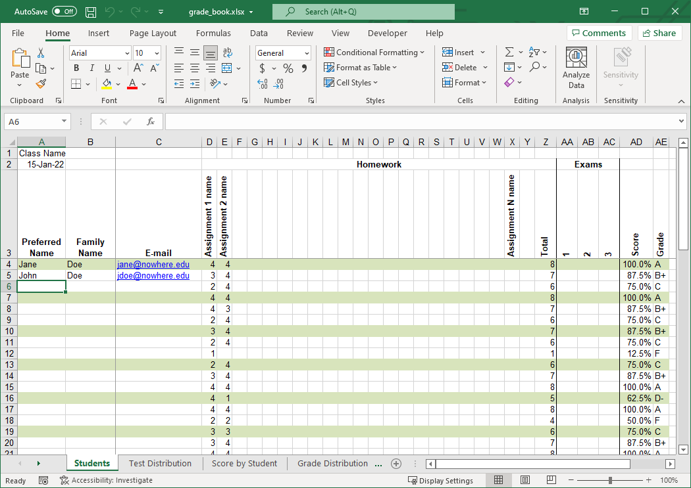

Grade Book Template
Keeping track of student scores and grades shouldn’t be a difficult, time consuming exercise as it is with several e-learning software systems. Teachers should spend the majority of their time preparing and teaching instead of wrestling with difficult grading systems. Using Microsoft® Excel® we created a simple and flexible grade book template, shown below, that includes
- weighted assignments and exams
- alternating row colors making the score table easier to read
- letter grades automatically assigned from a table that you can change
- accurate midterm and final grades
- simple statistical measures
- several easy to read distribution charts
- all the power and ease of use of Excel at your finger tips

Download it, give it a try, and give us your feedback.
Excel Features Used
Intermediate and advanced users of Excel may find this grade book template interesting because it uses the following Excel features.
- Conditional formatting rule with a formula that uses the ROW and MOD functions to produce highlights on every third row which is easier to read than every other row
- Named ranges to make common references easier to read, understand, and maintain and to be used in macros
- Reference intersect operator (space character) instead of the range operator (colon : character) in cells D32:X32 to make the references easier to read, understand, and maintain
- IF and COUNT functions in cells D32:X32 to automatically include an assignment in the overall grade calculations only when at least one score for that assignment is entered and to exclude that assignment otherwise
- VLOOKUP in cells AE4:AE28 to automatically assign a letter grade based on a student’s overall score
- Array formulas (sometimes called Control+Shift+Enter formulas or CSE formulas) in cells AA40:AC49 to count how many scores fall within each range
- COUNTIF in cells AF40:AF51 to count how many students have earned each letter grade
- Nice examples of XY scatter and column charts